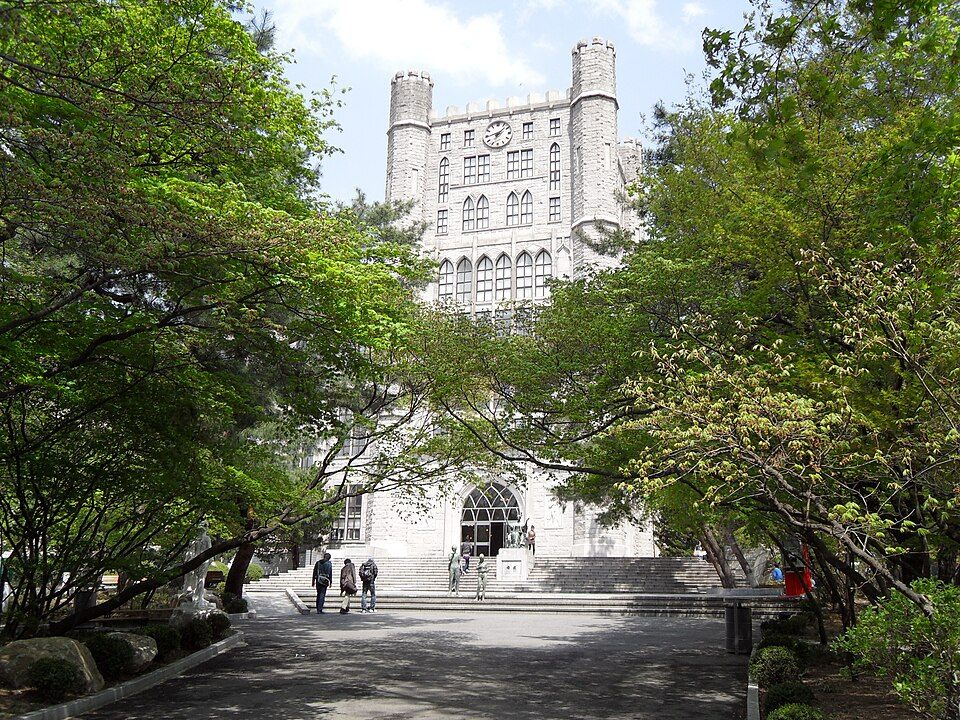

수시 원서 접수가 끝나면 고3의 시간표는 수능 하나로 모입니다. 이 글은 경희대학교 전형 소개가 아니라, 정시 반영비율을 "그래서 어느 과목을 먼저 하느냐"로 바꿔 읽는 글입니다. 같은 수능 점수라도 대학마다 과목 무게가 달라서, 목표 대학이 정해지면 남은 기간의 과목 배분도 달라져야 합니다. 고3 수학과외나 국어 수업 시간을 어디에 쓸지 정할 때 기준이 되는 숫자입니다.
| 계열 | 국어 | 수학 | 탐구 | 영어 |
|---|---|---|---|---|
| 인문 | 40% | 25% | 35% | 비율 없이 등급별 감점 (2등급까지 감점 없음) |
| 자연 | 25% | 40% | 35% |
일부 사회계열 모집단위는 국어와 수학을 같은 비중으로 봅니다. 자연계열은 과학탐구 응시자에게 가산점이 있습니다. 반영 방식은 2026학년도와 같습니다.
국어 40%, 수학 25%. 같은 점수를 올려도 국어에서 올린 점수가 1.6배 무겁게 반영된다는 뜻입니다. 남은 기간에 수학 킬러 문항 하나를 붙잡고 있기보다, 국어에서 흔들리는 영역(비문학 한 세트, 문법 몇 문항)을 먼저 안정시키는 편이 경희대학교 기준으로는 효율적입니다. 탐구도 35%로 수학보다 비중이 커서, 사회탐구 두 과목을 끝까지 놓지 않아야 합니다.
자연은 반대로 수학이 40%입니다. 수학 점수가 곧 당락이라, 남은 시간의 가장 큰 덩어리는 수학에 둡니다. 다만 탐구가 35%로 국어보다 큽니다. 과학탐구 두 과목에 가산점까지 붙으니, 수학만 하다가 과탐을 방치하면 계산이 틀어집니다. 수학 공부 시간을 지키면서 과탐 두 과목을 주 단위로 번갈아 돌리는 구조가 맞습니다.
경희대학교는 영어를 비율로 넣지 않고 등급에 따라 감점합니다. 1등급과 2등급은 똑같이 취급됩니다. 모의고사에서 안정적으로 2등급 이상이 나온다면, 1등급을 위해 영어에 시간을 더 쓰기보다 그 시간을 국어(인문)나 수학(자연)으로 옮기는 게 이득입니다. 반대로 2~3등급 경계에 있다면 영어가 먼저입니다 — 그 경계를 넘는 순간 감점이 붙기 때문입니다.
학생 수준에 맞는 선생님을 24시간 안에 추천해 드려요. 상담은 무료입니다.